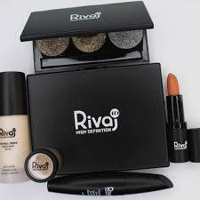
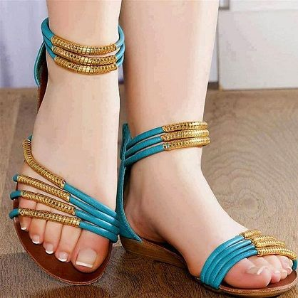
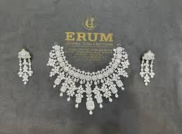
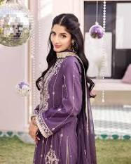
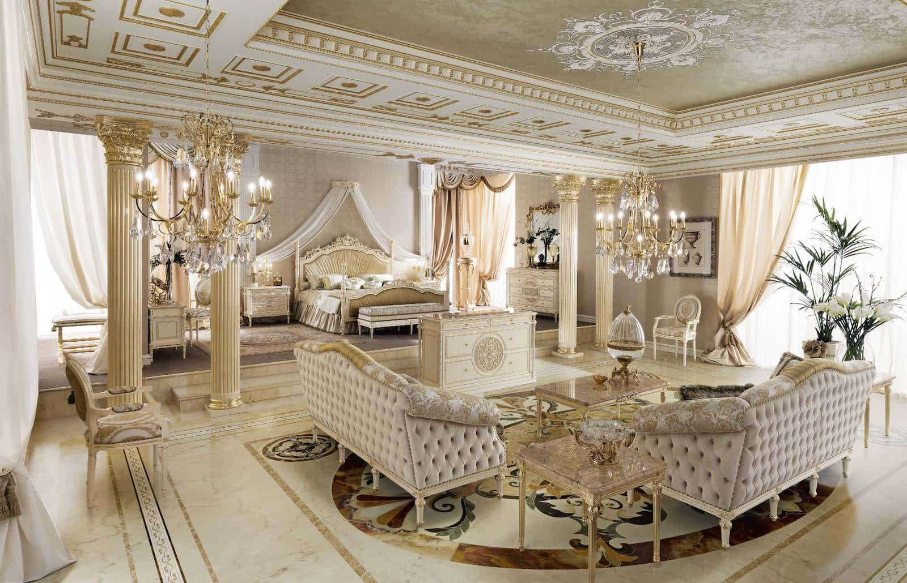

ASAM.JOFA
S.SAFINAZ
 its my favoIn the
ever-evolving landscape of haute couture, Asim Jofa emerges as a true luminary weaving master designs
that effortlessly From the ladies conversations I hear, I feel that, all the dresses are very expensive including me. Besides, what they say sometimes makes me feel happy and proud of myself. I have heard many customers coming here that this place is very expensive, but this boutique is the best in the town. The worry and tiredness of staying here for so long gets full compensation. Every day there are at least forty to fifty visitors but, just eight to ten buy a dress or two.
When customers talk that the dresses are very expensive here, I always wonder how have to stay here. I am quite happy here but several times I would like to get a change and go into a home. It’s not like that I am dissatisfied here but, the fact of being purchased by someone will surely give me a feeling of self-pride and pleasure. I and my friends often discuss about the boutique and its day to day activities.
Most of my companions complain of getting bored, sitting quietly unattended and unattractive. I have also heard that, these days, fashion is changing very fast. At some times, I feel that we may get stagnated and soon may become out of fashion and then become discarded.
its my favoIn the
ever-evolving landscape of haute couture, Asim Jofa emerges as a true luminary weaving master designs
that effortlessly From the ladies conversations I hear, I feel that, all the dresses are very expensive including me. Besides, what they say sometimes makes me feel happy and proud of myself. I have heard many customers coming here that this place is very expensive, but this boutique is the best in the town. The worry and tiredness of staying here for so long gets full compensation. Every day there are at least forty to fifty visitors but, just eight to ten buy a dress or two.
When customers talk that the dresses are very expensive here, I always wonder how have to stay here. I am quite happy here but several times I would like to get a change and go into a home. It’s not like that I am dissatisfied here but, the fact of being purchased by someone will surely give me a feeling of self-pride and pleasure. I and my friends often discuss about the boutique and its day to day activities.
Most of my companions complain of getting bored, sitting quietly unattended and unattractive. I have also heard that, these days, fashion is changing very fast. At some times, I feel that we may get stagnated and soon may become out of fashion and then become discarded.
COSMATICS
rivaj cosmetics

Cosmetics have been part of human history for long. The word 'cosmetics' have been derived from the Greek
word meaning 'technique to dress and arrange'Cosmetics are composed of mixtures of chemical compounds derived from either natural sources or synthetically created ones.[1] Cosmetics have various purposes, including personal and skin care. They can also be used to conceal blemishes and enhance natural features (such as the eyebrows and eyelashes). Makeup can also add colour to a person's face, enhance a person's features or change the appearance of the face entirely to resemble a different person, creature, or object.[2]
People have used cosmetics for thousands of years for skin care and appearance enhancement. Visible cosmetics for women and men have gone in and out of fashion over the centuries.
STYLO
stylo

has become quick at anticipating changes in fashion and catering to them with unparalleled swiftness.
From our humble beginnings, we have transformed ..
I believe in comfortable shoes.
One time I was walking to a party with these Steve Madden 7 inch nude pumps, totally fashionable. After 30 minutes I started experiencing pain in my sole. After 40 minutes, I couldn’t walk in them because of a developing blister. This forced me to take my shoes off and opt for a barefoot look, totally not fashionable. I believe in comfortable shoes because they changed my life.
Unlike walking with high heels, comfortable shoes bring out the best in me. Yes, you may look skinny, taller and classier in those 6 inch heels, but lets be real, you don’t know how to walk in them. Take for example, my friend Laura. She recently had a job interview at General Electric. She was extremely qualified, spoke about her long term career goals, and showed her fantastic personality to go with those new Jessica Simspon’s black suede pumps.
Erum Jewellers
Erum jeweler

19-Oct-2022 — Erum Jewellers came into existence on April 2017 by the designer and founder
Mr. Mahammad Ali with the mission to provide quality gold and an excellent choice for vintage-inspired jewelry and simple, traditional designs because they suggest a slightly vintage, candlelit glamour. Someone who wanted, for instance, classic and traditional wedding jewelry with the “Grandma’s pearls” look would be attracted to jewelry that was accurately described this way.
SanaSafinaz
SanaSafinaz

APPARELS LTD - Free company information from Companies House
including registered office address, filing history, accounts, annual return, officers, Embrace cultural richness with everyday wear - Shop vibrant, timeless ethnic silhouettes. Fusion of colors & prints juxtaposed on soft, airy fabrics. Shop trending collections! 24/7 Customer Support. Wide Range of designs. Leading Fashion Brand. Shop Online.
...
MY HUSBAND FURNITURE SHOROM
modenese

Furniture can be a product of design and can be considered a form of decorative art. furniture, household equipment, usually made of wood, metal, plastics, marble, glass, fabrics, or related materials and having a variety of different purposes. Furniture ranges widely from the simple pine chest or stick-back country chair to the most elaborate marquetry work cabinet or gilded console table
In addition to furniture's functional role, it can serve a symbolic or religious purpose. It can be made from a vast multitude of materials, including metal, plastic, and wood.
This is me BushraAfaq
linkedin
I want to introduce myself
Dedicated and
experienced educator with 20 years of experience in teaching, coordination, and leadership roles.
Skilled in art and craft, Montessori methods, and student counseling. Proven track record
of creating engaging learning environments and developing innovative educational programs.still
i am student of IT classes in goverorHouse
my best teacher is sir.BILAL MOHAMMAD and sir. ANEEQ both are excellent teachers and sir.BILAL MOHAMMAD KHAN he is marvellous problem solving teacher
hardly thanks to SIR .KAMRAN KISORI who arranged such type of brillent classes for all of us..
{kind=link}